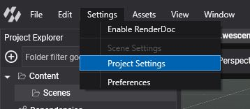
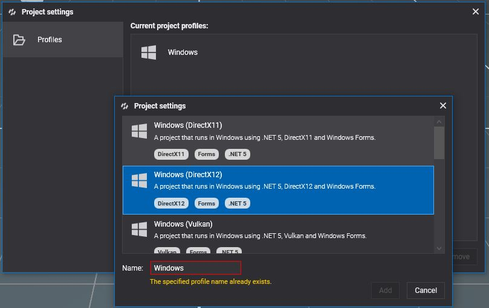
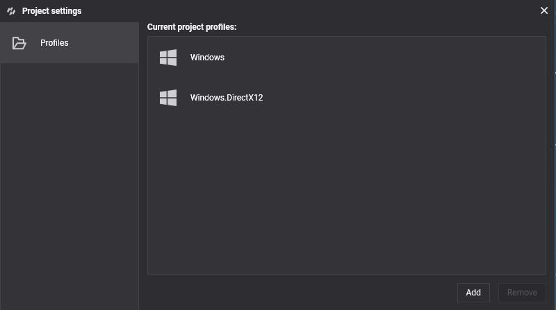
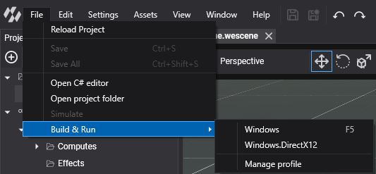

DirectX 12
DirectX 12 is Microsoft's explicit, low-overhead graphics API for Windows 10 and 11. It is the default backend of Evergine on Windows: new projects use the Windows (DirectX12) template, and Evergine Studio renders with it unless you start it with another backend.
Being an explicit API, DirectX 12 lets Evergine record work on several threads, run graphics, compute and copy work on separate queues, and use the newest GPU features: DirectX Raytracing through the low-level ray tracing pipeline, mesh and amplification shaders, and shader model 6 through the DXC compiler (effect profiles 12_0 to 12_7).
Supported devices
- Windows 10 and 11 PCs.
Ray tracing and mesh shaders need a GPU and driver that support them. Check graphicsContext.Capabilities.IsRaytracingSupported and IsMeshShaderSupported at runtime.
Check your DirectX version
Run dxdiag to see the DirectX version and the feature levels of your GPU. DirectX 12 is updated through Windows Update and the graphics driver. See Microsoft support for details.
Create a graphics context
GraphicsContext graphicsContext = new Evergine.DirectX12.DX12GraphicsContext();
graphicsContext.CreateDevice();
To render in software, with no GPU at all, pass useWarpAdapter: true. The WARP adapter is slow, but it runs anywhere, which makes it useful on build servers and virtual machines for automated tests:
GraphicsContext graphicsContext = new Evergine.DirectX12.DX12GraphicsContext(useWarpAdapter: true);
graphicsContext.CreateDevice();
Build & Run
New projects already have a Windows profile with DirectX 12. To add it to an existing project, open Settings > Project Settings in Evergine Studio:

Add a profile with the Windows (DirectX12) template:


Then run it from File > Build & Run > Windows.DirectX12:
